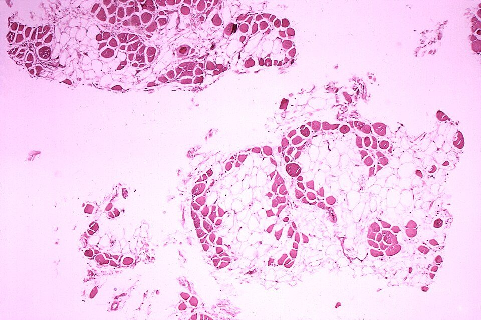

Información divulgativa. No sustituye la valoración de un profesional sanitario. Ante síntomas neurológicos bruscos (boca torcida, debilidad de un lado, dificultad para hablar) llama al 112.


Qué son
Las distrofias musculares son un grupo de más de 30 enfermedades genéticas que producen una degeneración progresiva de los músculos. Se deben a mutaciones en genes que fabrican proteínas necesarias para la estructura y el funcionamiento de las fibras musculares. Sin ellas, las fibras se dañan con la contracción, mueren y son sustituidas por grasa y tejido fibroso. Fue Guillaume Duchenne quien describió en el siglo XIX la forma más conocida.
Las más frecuentes
| Distrofia | Herencia | Inicio | Características |
|---|---|---|---|
| Duchenne | Ligada al X (varones) | 2-5 años | La más frecuente y grave en la infancia: 1 de cada 3.500-5.000 niños |
| Becker | Ligada al X | Infancia o juventud | Como la de Duchenne, pero más leve y lenta |
| Miotónica de Steinert (tipo 1) | Dominante | Juventud o adulto | La más frecuente en adultos: debilidad, miotonía, cataratas, problemas cardiacos y hormonales |
| Facioescapulohumeral | Dominante | Adolescencia | Debilidad de la cara, los hombros y los brazos, a menudo asimétrica |
| De cinturas | Recesiva o dominante | Variable | Debilidad de caderas y hombros |
| Oculofaríngea | Dominante | Más de 40 años | Párpados caídos y dificultad para tragar |
Distrofia muscular de Duchenne
Se debe a la falta de distrofina, una proteína que actúa como amortiguador de la fibra muscular. Los niños empiezan a caminar algo tarde, se caen a menudo, tienen dificultad para correr, subir escaleras y levantarse del suelo (se ayudan apoyando las manos en las piernas, la maniobra de Gowers), y las pantorrillas parecen grandes (pseudohipertrofia). Sin tratamiento pierden la capacidad de caminar hacia los 10-12 años. Después se afectan la respiración y el corazón (miocardiopatía). Gracias a los cuidados actuales, la esperanza de vida ha pasado de la adolescencia a los 30-40 años. Las madres portadoras pueden tener debilidad leve o problemas cardiacos.
Distrofia miotónica
Además de debilidad, produce miotonía: dificultad para relajar los músculos tras contraerlos (por ejemplo, para soltar la mano tras un apretón). Es una enfermedad multisistémica: cataratas precoces, arritmias cardiacas que pueden ser graves, diabetes, calvicie frontal, somnolencia, problemas digestivos. Muestra anticipación: puede ser más grave en cada generación, con una forma congénita muy grave.
Diagnóstico
- Exploración y antecedentes familiares.
- Creatina quinasa (CK) en sangre, muy elevada en Duchenne y Becker.
- Estudio genético: confirma el diagnóstico y permite el consejo genético a la familia.
- Electromiograma, resonancia muscular y, a veces, biopsia muscular.
Tratamiento
No tienen cura, pero los cuidados han mejorado mucho la vida de los pacientes:
- Corticoides (prednisona, deflazacort, vamorolona) en la distrofia de Duchenne: retrasan la pérdida de la marcha y las complicaciones.
- Terapias genéticas para Duchenne: fármacos de salto de exón (eteplirsen, golodirsen, viltolarsen, casimersen, aprobados en EE. UU.) para mutaciones concretas, ataluren para mutaciones sin sentido, la terapia génica delandistrogene moxeparvovec (aprobada en EE. UU. en 2023-2024, con resultados discutidos) y givinostat, aprobado en 2024. Ver terapias génicas y de ARN.
- Seguimiento cardiológico (fármacos cardioprotectores, marcapasos o desfibriladores) y respiratorio (ventilación no invasiva, asistente de tos).
- Fisioterapia, ortesis, sillas de ruedas y cirugía de la escoliosis.
- Apoyo psicológico, educativo y social; asociaciones como ASEM en España.
Historia · Medicapedia
La historia de esta enfermedad
Cómo se describió, quién la estudió y cómo ha cambiado su tratamiento a lo largo de los siglos, en Medicapedia, nuestra enciclopedia hermana de historia de la medicina.
Fuentes
- Duan D, et al. Duchenne muscular dystrophy. Nat Rev Dis Primers. 2021;7:13.
- Birnkrant DJ, et al. Diagnosis and management of Duchenne muscular dystrophy, part 1. Lancet Neurol. 2018;17:251-67.
- Mercuri E, et al. Muscular dystrophies. Lancet. 2019;394:2025-38.
- Johnson NE. Myotonic muscular dystrophies. Continuum. 2019;25:1682-95.
- Federación ASEM. Enfermedades neuromusculares.